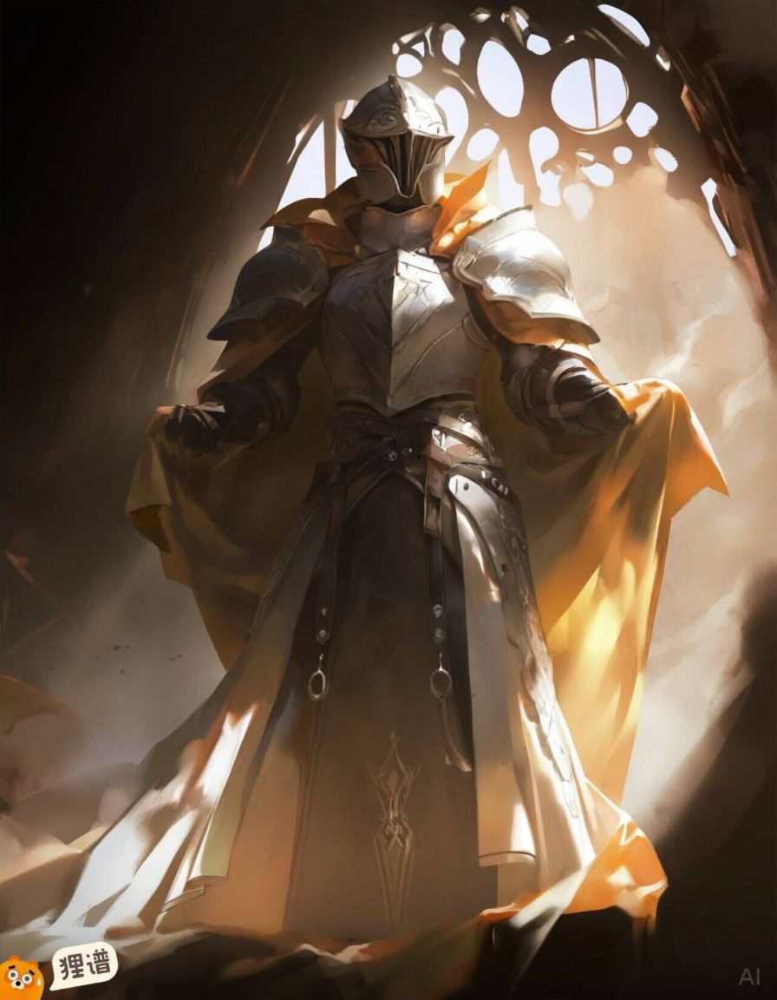

或许轮不到我们介绍，但既然是您的话……
首都（迪纳斯）城堡宝库深处一件落满灰的破旧全身铠甲，在一次奇怪的魔力暴动后却慢慢变得崭新。许多人尝试穿戴无果，一段时间后，我们发现铠甲拥有意识。它自称“融心”，是过去失落文明的最高造物。每一任搭档都是久经战阵的将军，正直坚定的英雄，所以不接受无名小卒的穿戴。现在的苏醒是因为一股邪恶强大的能量正在靠近，准备选择新一任搭档。
在高层讨论后，因为铠甲对我们的理念并不完全认同，于是高层们放弃干预铠甲的选择，最终它选择了您——尊敬的将军。这就是我们了解的全部了。
一件全身甲，橙黄披风，胸口处镶嵌菱形护心甲，手，臂处由附魔的木质软甲覆盖 ，胸甲刻暗纹，附肩甲，牛皮腰带挂黑曜石扣。下半身为三段裙甲
| 生命 | 脱战回血 （每秒） |
近战伤害 | 远程伤害 | 攻速 （近;远） |
伤害类型 （近;远） |
射程 | 护甲 | 魔抗 | 移速 | 复活时间 | 拦截范围 | 攻击形式 （近;远） |
经验倍率 （近;远） |
|---|---|---|---|---|---|---|---|---|---|---|---|---|---|
| 500 | 30 | 20-30 | 25-35 | -;- | 物理;物理 | - | 50 | 50 | - | -50％ | - | - | -;- |
出场时，你附身于另一名英雄。将你的所有属性以100％的倍率附加于另一名英雄。若护甲/魔抗超过95点，则超过的每点护甲/魔抗补偿50点血量/1点基础攻击力，然后调整护甲/魔抗至95点。另一名英雄复活时间减半，且你共享该英雄的经验获取。
观烽火 | 被动
战争将至，做好准备
当敌人出现时，你附身的英雄每3/2/1秒增加1点基础攻击力和5点临时血量和血量上限，不超过原基础攻击力/血量上限的50％
注：依照附身后的基础属性计算，不计算技能加成
技能点：2/1/1
无
军功章 | 被动
战功赫赫，值得嘉奖
所有防御塔，击杀敌人数量达到10个后，消耗其当前造价（不计算技能）10％的金币，为其授勋。防御塔获得5/10/15％的攻击力与攻速加成。单座防御塔仅触发一次，若金币不足，则等待足够后触发扣除
技能点：2/2/2
经验：无
纪念碑 | 被动
荣耀与牺牲不应被遗忘，因为它让我们更加坚定
每当援军与防御塔召唤物在15秒内未进行拦截与攻击，则期间每名阵亡的友军（不包括英雄召唤物，且需留下尸体）为其提供1点攻击力与0.5/1/1.5点/秒回血直到脱战2/3/5秒， 未放置或恢复时依然计算时间
技能点：3/2/2
经验：无
亲卫队 | 亡语
你做的很好，士兵
援军与防御塔召唤物阵亡时（需留下尸体），有30％的概率作为融心卫/融心铁卫复活。你附身的英雄死亡时，召唤1个融心铁卫，2个融心卫。
血量上限大于等于100的成为融心铁卫，小于100成为融心卫。二者存在时间为20秒，可调集，不影响单位恢复。
注：若防御塔已被授勋，提升概率为50％
技能点：3/2/2
经验：5/10/15
| 名字 | 生命值 | 脱战回血 （每秒） |
近战伤害 | 远程伤害 | 攻击间隔 （近;远） |
伤害类型 | 射程 | 护甲 | 魔抗 | 移速 | 拦截范围 |
|---|---|---|---|---|---|---|---|---|---|---|---|
| 融心卫 | 70/80/90 | 10 | 3-7/5-10/5-10 | 0/0/15-25 | 1.0/s;2.0/s | 物理 | 50-280 | 0/30/30 | 0/0/30 | 75 | 120 |
| 融心铁卫 | 110/120/130 | 10 | 5-10/8-12/10-15 | 0/15-25/25-35 | 1.0/s;2.0/s | 物理 | 60-300 | 40 | 0/30/40 | 65 | 120 |
辉煌往昔 | 主动
你要看看我的全盛时期吗？
对你与周围200范围内的友军（包括援军，防御塔召唤物）使用，调整所有属性为本关卡内曾达到过的最高数值，持续8/16/24/32秒。
特别的，你获得8秒的无敌，清除所有负面状态，然后将血量调整为100％。
cd:60s
技能点：4/4/4
移动
无，同附身英雄